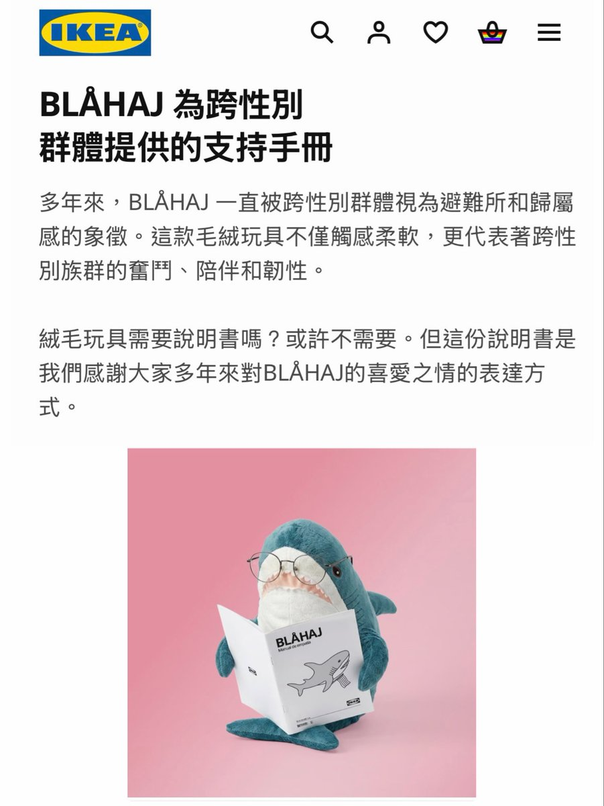
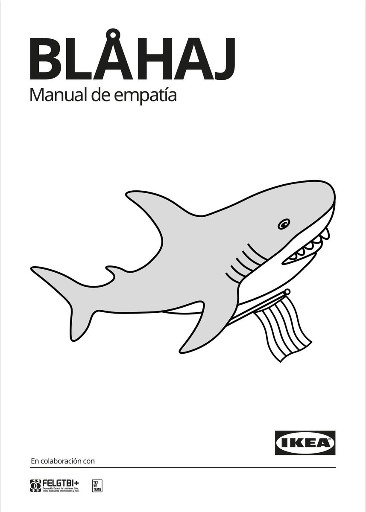

RT @Mirro_zinuo: IKEA 西班牙在驕傲月出了一本 BLÅHAJ鯊鯊的《同理心使用說明書》。
https://t.co/DlUUXmgX7B
多年來，BLÅHAJ 一直是跨性別社群的庇護與歸屬象徵。IKEA 說，這是它第一隻需要「使用說明書」的玩偶——但不是教你…
https://t.co/DlUUXmgX7B
多年來，BLÅHAJ 一直是跨性別社群的庇護與歸屬象徵。IKEA 說，這是它第一隻需要「使用說明書」的玩偶——但不是教你…

